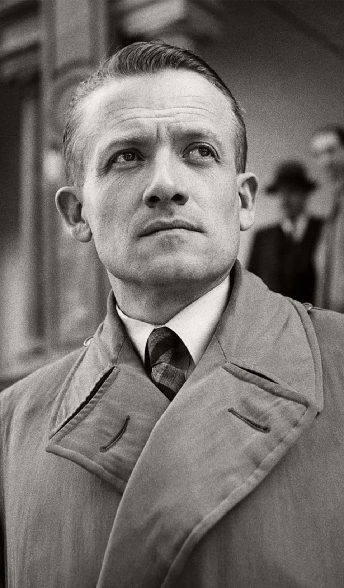

Nom : Henri Frenay
Naissance : 19 novembre 1905
Décès : 6 août 1988
Nationalité : Française
Rôle : Chef de la Résistance intérieure, fondateur du mouvement Combat
Henri Frenay est l’une des grandes figures de la Résistance intérieure française. Ancien officier, il choisit la clandestinité après la défaite de 1940 et devient l’un des principaux organisateurs de la lutte contre l’occupation allemande et le régime de Vichy.
Frenay fonde le mouvement Combat, qui devient l’un des plus importants réseaux de Résistance en France. Le mouvement diffuse des journaux clandestins, organise des filières, des groupes armés et participe à la structuration de la Résistance intérieure.
Henri Frenay joue un rôle majeur dans l’unification progressive des mouvements de Résistance. Il travaille avec des figures comme Jean Moulin et contribue à la coordination nationale des réseaux clandestins.
Par son action, Frenay participe à la structuration des Forces Françaises de l’Intérieur (FFI). Il aide à préparer les combats de la Libération et à intégrer les groupes de Résistance dans une organisation militaire cohérente.
Après la guerre, Henri Frenay reste une voix importante sur la mémoire de la Résistance. Son nom demeure associé à l’engagement clandestin, à l’organisation des réseaux et à la volonté de poursuivre le combat malgré la défaite de 1940.